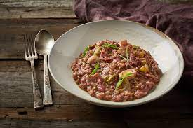

Risotto Recipe

Ingredients
- 2 tablespoons olive oil
- 1.5 ounces prosciutto
- 1 large shallot, minced
- 1 clove garlic, chopped
- 2 chanterelle mushrooms, sliced
- 1 cup arborio rice
- 1 cup red wine
- 3 cups beef stock, or more as needed, divided
- .5 cup arugula
- .3 cup freshly grated Parmesan cheese
- 1 tablespoon chopped fresh thyme
- ground black pepper to taste
Directions
- Heat olive oil in a Dutch oven or heavy pot over medium
heat; cook prosciutto until edges begin to curl and fat is
rendered, 2 to 3 minutes. Add shallot and cook until
fragrant, about 2 minutes. Add garlic and cook until
fragrant, about 1 minute. Add mushrooms and cook for 30
seconds.
- Cook and stir rice into prosciutto mixture, stirring
continually, until rice is translucent around edges, 1 to 2
minutes. Pour red wine into rice mixture; cook, stirring
every 30 seconds, until wine is absorbed, about 5 minutes.
Stir 1 cup broth into rice mixture, cooking and stirring
until broth is almost completely absorbed, 3 to 5 minutes.
Continue adding 1 cup broth at a time, stirring constantly,
until rice is tender, 15 to 20 minutes.
- Mix arugula, Parmesan cheese, thyme, and black pepper
into rice mixture; cook and stir until cheese is melted,
2 to 3 minutes.